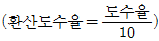
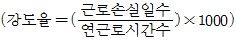
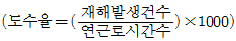
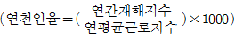
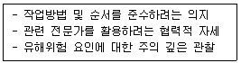
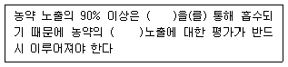
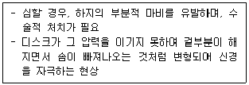

농작업안전보건기사 (2019-09-21 기출문제)
1과목: 농작업과 안전보건교육
1. 농업기계화 촉진법령상 안전교육에 관한 사항으로 틀린 것은?
- 교육대상자 : 농업용기계를 사용하거나 사용하려는 농업인 등
- 교육시간 : 농업기계의 종류에 따라 1일 3시간 이내의 범위에서 교육
- 교육기간 : 농업기계의 종류에 따라 3일 이내의 범위에서 교육
- 교육과정 : 구조 및 조작취급성등에 관한 교육
(정답률: 59%)

2. 농어업인삶의질법령상의 농작업 안전보건에 관한 다음 설명 중 옳은 것은?
- 정부는 농업인등의 복지증진, 농촌의 교육여건 개선 및 지역개발을 촉진하기 위하여 5년마다 기본계획을 세워야 한다.
- 이 법은 농업인의 삶의질 개선과 농촌지역의 개발촉진을 목적으로 하는 것이기 때문에 농업인의 복지, 농촌지역개발, 농업인 자녀교육을 중점대상으로 하며 농작업 안전보건 기술개발이나 재해예방 교육은 이 법의 규율대상이 아니다.
- 국가과 지방자치단체는 농업인 질환의 예방과 치료를 위한 지원시책을 수행하기 위하여 5년마다 농업인의 질환현황을 조사하여야 한다.
- 농촌진흥청장은 농업인의 질환현황을 파악하기 위한 조사를 수행할 때 해당 농업인의 성별, 나이 등의 일반적 특성은 개인정보에 해당하므로 조사대상에 포함해서는 안된다.
(정답률: 39%)
3. 농작업 안전보건 교육프로그램의 학습내용 구성에 관한 설명으로 틀린 것은?
- 한 번 제시한 내용을 반복하여 제시한다.
- 핵심주체와 초점은 학습목표에 연계되어야 한다.
- 학습내용의 구조화는 비슷한 내용을 묶는 작업이다.
- 학습되는 순서를 고려하여 학습 내용을 구성하는 일을 계열화라고 한다.
(정답률: 64%)
4. 농약관리법령상 판매·구매 정보의 기록 및 보존 의무에 따라 제조 및 판매업자 등이 농약 판매 시 전자적으로 기록 및 보존해야 할 사항이 아닌 것은?
- 구매자의 이름
- 구매자의 주민등록번호(또는 외국인등록번호)
- 구매자의 주소
- 농약 등의 품목명
(정답률: 73%)
5. 농약관리법령상 농약으로 분류되지 않는 것은?
- 달팽이를 방제하는데 사용하는 살충제
- 축사의 악취를 제거하는데 사용하는 방향제
- 잡목을 방제하는데 사용하는 제초제
- 농작물에 피해를 주는 탄저병을 방제하는데 사용하는 살균제
(정답률: 73%)
6. 안전보건 교육 평가 설계모형 중 ADDIE 모형의 구성요소에 해당하지 않는 것은?
- Anaiysis
- Design
- Describe
- Evaluation
(정답률: 42%)
7. 재해통계 관련 공식으로 틀린 것은?




(정답률: 50%)
8. 농어업인안전보험법령상 농어업작업안전재해의 예방교육 내용에 해당하지 않는 것은?
- 농어업인의 건강에 영향을 미치는 위험요인의 차단에 관한 교육
- 작업자의 안전 확보를 위한 개인보호장비에 관한 교육
- 농산물 수확 또는 어획물 작업 등 노동 부담 개선을 위한 근골격계 질환 예방에 관한 교육
- 농어업작업 환경의 특수성을 고려한 건강검진에 관한 교육
(정답률: 30%)
9. 농어업인삶의질법령상 농어업 작업자의 건강위해요소 측정대상항목에 해당하지 않는 것은?
- 소음, 진동, 온열 환경 등 물리적 요인
- 농약, 독성가스 등 화학적 요인
- 인체에 과도한 부담을 주는 작업특성
- 유용 미생물의 확산 요인
(정답률: 74%)
10. 하버드 학파의 5단계 교수법 중 4단계로 옳은 것은?
- 교시(Presentation)
- 총괄(Generalization)
- 응용(Application)
- 연합(Association)
(정답률: 29%)
11. 농어업인안전보험법령상 농업작업안전재해로 인정되는 경우에 해당하지 않는 것은?
- 농업작업장과 출하처 간의 농산물 운반작업중 발생한 사고
- 농업작업과 관련된 시설물 등의 결함이나 관리소홀로 발생한 사고
- 주거와 농업작업장 간의 농업용 자재 운반작업중 발생한 사고
- 피보험자가 소유하거나 관리하는 농기계의 수리를 위한 이동 중에 발생한 사고
(정답률: 60%)
12. 다음 내용과 관련이 있는 안전교육은?

- 안전기술교육
- 안전지식교육
- 안전태도교육
- 문제해결교육
(정답률: 63%)
13. 농작물 안전보건 교육의 특성이 아닌 것은?
- 교육목표가 실천성이 강조되는 농업인의 행동변화에 역점을 둔다.
- 남녀노소, 기술수준의 차이 등 교육대상자의 사회, 경제적 특성이 다양하다.
- 농업인 교육은 구체적인 경험획득을 위한 실증적 교육이 중요하다.
- 대부분의 농업인 교육은 장기간 집합교육이다.
(정답률: 67%)
14. 농작업 환경의 특징으로 가장 거리가 먼 것은?
- 인구의 고령화
- 표준화된 반복 작업
- 특정기간 동안에 집중되는 작업
- 여성과 고령자 비중이 높은 가족노동
(정답률: 56%)
15. 농작업 교육의 대상자는 대부분 성인이다. 성인을 대상으로 한 효과적인 교수학습전략으로 거리가 먼 것은?
- 문제 중심보다 주제 중심으로 접근한다.
- 즉각 적용이 가능한 지식과 기술에 초점을 둔다.
- 학습절차의 결정에 학습자를 참여시킨다.
- 학습자의 과거 경험을 활용한다.
(정답률: 54%)
16. 교육생이 혼자서 자기능력과 시간, 학습속도에 맞추어 학습할 수 있도록 학습자료를 이용하는 학습형태를 ‘프로그램 학습법’이라고 한다 프로그램 학습법의 특징으로 거리가 먼 것은?
- 집단사고의 기회가 많다.
- 매 학습마다 피드백을 할 수 있다.
- 지능, 학습속도 등 개인차를 고려할 수 있다.
- 수강자들이 학습 가능한 시간대의 폭이 넓다.
(정답률: 72%)
17. 실내 양계작업 안전보건관리와 관련한 내용으로 가장 거리가 먼 것은?
- 환기 및 온도조절, 사료 급여, 작업장 내외 소독 및 청소작업 등에서 유해·위험환경에 노출된다.
- 작업환경이 자동화되어 소수의 작업자가 관리하고 있으므로 개인의 안전의식이 중요하다.
- 소독 시 유해물질 노출, 동물사육에 따른 유기분진 및 미세먼지 흡입 등에 의한 건강상 질환 및 안전사고 위험이 있다.
- 자외선으로 인한 각막염, 결막염, 백내장, 흥반반응, 색소 침착 등 눈·피부 건강에 영향을 준다.
(정답률: 67%)
18. 농업기계화 촉진법령상 농업기계에 관한 내용으로 틀린 것은?
- 이앙기: 주행장치, 모탑재장치 및 모심기장치 등을 갖추고 벼의 모를 논에 옮겨 심는 자주식 기계
- 정식기: 식부장치, 모공급장치, 복토 등을 갖축고 벼 외의 배추, 고추 등의 어린모를 농경지에 옮겨 심는 자주식 기계
- 농산물건조기: 곡물 및 유채의 건조를 목적으로 사용되는 기계
- 가정용 도정기: 농가 단위에서 벼를 투입하여 현미 또는 백미를 가공하는 소요동력 1kW 이상 10kW 이하인 가정용 정미기
(정답률: 42%)
19. 농어업인안전보험법령상 보험금의 종류에 해당되지 않는 것은?
- 간병급여금
- 장해위로금
- 직업재활급여금
- 행방불명급여금
(정답률: 36%)
20. 한 사업장에서 2건의 중상 재해가 발생하였다. 버드의 재해구성비율을 따를 때 몇 건의 경상 재해가 예상되는가?
- 20
- 29
- 58
- 60
(정답률: 39%)
2과목: 농작업 안전관리
21. 등짐형 동력 예초기로 제초 작업을 하는 경우에 착용해야 하는 개인보호구로 적절하지 않은 것은?
- 방진장갑
- 보안경
- 안전화
- 방독마스크
(정답률: 71%)
22. 농작업 사고예방 안전수칙으로 틀린 것은?
- 농작업에 적합한 복장은 언제나 단정하게 할 것
- 작업 전에는 기계나 수공구의 상태를 점검할 것
- 수공구는 사용목적에 맞는 것을 선택 후 사용할 것
- 안전장치는 작업의 기간을 고려하여 필요시 개조하거나 일부 제거하여 사용할 것
(정답률: 66%)
23. 예취기의 안전을 위한 지침으로 적절하지 않은 것은?
- 제초용으로만 사용한다.
- 운전 중 항상 기계의 작업범위 15m 내에 사람이 접근하지 못하도록 하는 등 안전을 확인한다.
- 반드시 두 손으로 작업하고 작업 중 칼날을 지면에서 30cm 이상 들어 올리지 않는다.
- 시동 전 반드시 스로틀 레버를 조정하여 고속 위치에 맞추고 예취기가 움직이지 않도록 확실히 잡고 예취날이 지면에 닿지 않은 상태에서 시동을 건다.
(정답률: 68%)
24. 추락전도 사고의 위험성이 높은 지역에서 농기계 작업을 할 때의 주의사항으로 틀린 것은?
- 농로의 가장자리에 너무 붙어 주행하지 않는다.
- 경사지나 언덕길에 진입하기 전에 속도를 낮추고 진입 후에는 변속을 하지 않는다.
- 등고선을 따라 주행 시 무거운 쪽이 아래쪽으로 향하도록 한다.
- 논둑을 넘을 때에는 차체가 논둑에 직각이 되도록 한다.
(정답률: 50%)
25. 농약의 보관 및 관리방법으로 틀린 것은?
- 잠금장치가 있는 농약 전용보관함에 보관한다.
- 남은 농약은 밀폐된 다른 용기에 옮겨 담아 보관한다.
- 농약 빈 병은 함부로 버리지 않고 분리처리해야 한다.
- 고독성 농약은 확인이 가능하도록 구분하여 보관한다.
(정답률: 64%)
26. 농약 취급시 주의사항으로 틀린 것은?
- 농약 살포기구 점검 시 방수성 장갑을 착용한다.
- 농약 살포시 보호구를 착용하고 작업한다.
- 농약 살포 작업 전 사용설명서를 자세히 읽고, 기구는 미리 점검한다.
- 농약이 인체에 접촉되기 전에 증발하도록 뜨거운 한낮에 살포한다.
(정답률: 72%)
27. 하비(J.H.Harvey)의 안전론에 따른 3E에 포함되지 않는 것은?
- 교육(Education)
- 독려(Enforcement)
- 경험(Experience)
- 기술(Engineering)
(정답률: 44%)
28. 산업안전보건법령상의 안전·보건표지 중 바탕은 파란색, 관련 그림은 흰색으로 표시되며, 해당 보호구를 착용해야만 출입을 할 수 있는 장소에 사용되는 표지는?
- 금지표지
- 경고표지
- 지시표지
- 안내표지
(정답률: 55%)
29. 산업안전보건법령상 물체의 낙하 또는 비래에 의한 위험을 방지 또는 경감하고, 머리부위 감전에 의한 위혐을 방지하기 위한 안전모의 종류에 대한 기호로 옳은 것은?
- A
- AB
- AE
- ABE
(정답률: 54%)
30. 농업기계를 사용하는 작업에서 일반적 안전 수칙으로 적절하지 않은 것은?
- 기후조건을 고려하여 작업 계획을 수립한다.
- 땀을 닦기 위해 목에 두른 수건의 끝은 작업 중 불편하지 않게 외부로 노출시키도록 한다.
- 작업장 주변에 일하는 사람이 있는지 미리 확인한다.
- 비산물이 발생하는 작업의 경우에는 보안경, 마스크 등의 보호구를 착용하도록 한다.
(정답률: 73%)
31. 전선 또는 차단기의 용도로 틀린 것은?
- 600V 이하의 옥내 배선에 절연전선(IV)을 사용한다.
- 옥내에서 AC 300V 이상의 소형 전기기구에 코드선(VF)을 사용한다.
- 전기기구나 코드가 합선되거나 과다사용으로 용량을 초과하면 자동으로 전기를 차단하기 위해 배선용 차단기를 설치한다.
- 과전류 시 퓨즈(Fuse)가 녹아 전기를 차단하도록 커버나이트 스위치를 설치한다.
(정답률: 50%)
32. 농작업 재해의 사고 원인 조사 방법 중 특성과 요인관계를 도표로 하여 어골상으로 세분화하는 분석법은?
- 크로스 분석
- 파레토 분석법
- 산업재해 조사표
- 특성요인도
(정답률: 58%)
33. 농약의 안전사용기준 설정 목적으로 틀린 것은?
- 농약을 절약하기 위하여
- 농약 살포액의 안전조제를 위하여
- 농약 살포 시 작업자의 중독 예방을 위하여
- 농산물의 잔류농약 안전성 향상을 위하여
(정답률: 64%)
34. 트렉터 안전수칙에 대한 설명으로 틀린 것은?
- 트랙터 작업 시에는 반드시 1인만 승차한다.
- 엔진가동 중 연료공급을 하지 말아야 한다.
- 고속 주행 시에는 좌우 브레이크를 분리하여 사용한다.
- 밀폐된 공간에서 장시간 가동해서는 안된다.
(정답률: 70%)
35. 이앙기의 안전이용 수칙으로 틀린 것은?
- 승용이앙기 하차 시 발을 헛디디지 않도록 운전석을 바라보며 내려온다.
- 아주 가까운 거리가 아니면 트레일러나 트럭 등을 이용하여 운반하는 것이 안전하다.
- 경사진 논 출입로를 내려올 때는 후진, 올라갈 때는 전진으로 운행하는 것이 안전하다.
- 식부날에 돌, 짚 등 이물질이 낀 경우에는 엔진을 멈춘 후 작동부가 정지한 다음에 이물질을 제거한다.
(정답률: 63%)
36. 안전보건에 대한 체크리스트를 작성할 때 유의사항으로 틀린 것은?
- 내용을 구체적이고 재해예방에 효과가 있어야 한다.
- 위험도가 낮은 것부터 순차적으로 작성한다.
- 일정한 양식을 정해 점검대상마다 별도로 작성한다.
- 정기적으로 검토하여 계속 보관하면서 활용한다.
(정답률: 73%)
37. 사다리식 통로를 설치할 때 사다리의 상단은 걸쳐놓은 지점으로부터 얼마 이상 올라가도록 해야 하는가? (단, 산업안전보건법령에 따른다.)
- 30cm
- 45cm
- 60cm
- 75cm
(정답률: 54%)
38. 농업기계화 촉진법령상의 농업기계의 안전과 관련된 내용으로 옳은 것은?
- 농업기계 종합점검 및 안전검정에서는 농업기계의 고온부 방호에 대한 안전을 검사하고 있다.
- 종합 검정 및 안전검정을 만족한 농업기계라 하더라고 소유자가 사용 편의상 안전장치의 구조를 개조하는 것이 가능하다.
- 정부지원 대상으로 등록된 모든 농업기계는 농업기계화촉진법 시행규칙에 명시된 종합검정 및 안전검정의 안전기준을 만족해야 한다.
- 농업기계 계기장치는 종합검정 및 안전검정의 검사항목에 포함되지 않는다.
(정답률: 43%)
39. 양돈장에서 분뇨 처리작업 시 질식사고의 주원인은 황화수소로 보고된다. 산업안전보건법령상 적정공기의 황화수소 농도 기준은?
- 18% 이상 23.5% 미만
- 1.5% 미만
- 30 ppm 미만
- 10 ppm 미만
(정답률: 34%)
40. 농업인이 10000명인 A지역에서 1년 동안 3건의 손상사고가 발생하였다. A지역의 연천인율은?
- 0.03
- 0.3
- 3
- 30
(정답률: 45%)
3과목: 농작업 보건관리
41. 농업인의 호흡기 질환과 관계가 없는 유해인자는?
- 무기분진
- 바이오에어로졸
- 석면
- 적외선
(정답률: 71%)
42. 도축장 종사자, 수의사, 축산농업인 등 감염된 동물과 이들의 조직을 취급하는 특정 직업인에게 주로 발생하며, 감염된 가축의 분비물 등과 접촉 및 흡입 시에 감염될 수 있는 인수공통 감염 질환은?
- 브루셀라중
- 쯔쯔가무시증
- 신증후군출혈열
- 중증열성형소판감소증후군
(정답률: 58%)
43. 급성 중독 시 신경 말단의 아세틸콜린 신경화학전달 물질 분해를 억제하여 발한, 요실금, 설사, 복통, 침 분비 과다 및 호흡부전을 일으키는 살충제 농약의 성분은?
- 유기인계
- 유기염소계
- 피레스로이드계
- 폐녹시계
(정답률: 34%)
44. 연간 분진 노출시간 조사 시 필요한 요소가 아닌 것은?
- 연간 작업 횟수
- 1회당 작업시간
- 작업 시 사용 도구
- 작업 대상물의 하중
(정답률: 74%)
45. 다음 ( )안에 들어갈 용어로 적합한 것은?

- 호흡기
- 눈
- 구강
- 피부
(정답률: 47%)
46. 농작업용 보호장구의 착용 및 관리요령으로 틀린 것은?
- 농약살포 시에는 피부 노출을 최소화하기 위하여 면장갑을 착용한다.
- 호흡용보호구 필터는 보관시 밀봉 보관한다.
- 귀마개와 귀덮개를 동시에 착용하면 소음차단효과가 증가한다.
- 농약을 희석하는 작업 시 보호구를 착용해야 한다.
(정답률: 68%)
47. 농업인의 소음성 난청을 예방하기 위하여 산업안전보건법령상의 허용기준을 준용한 경우, 95dB의 소음이 발생하는 사업장에서 1일 기준 몇 시간까지 근무가 가능한가? (단, 충격 소음은 제외한다.)
- 1 시간
- 2 시간
- 4 시간
- 8 시간
(정답률: 57%)
48. 농작업 중에서 중량물을 반복적으로 들어올리는 작업을 대상으로 활용할 수 있는 평가 도구는?
- JSI
- NLE
- SI
- OWAS
(정답률: 59%)
49. 농약관리법령상 농약 용도의 혼동을 방지하기 위하여 포장지와 병뚜껑 색을 달리한다. 생장조정제의 포장지 표지색으로 옳은 것은?
- 분홍색
- 녹색
- 적색
- 청색
(정답률: 27%)
50. 농업인의 건강에 영향을 미칠 수 있는 요인 구분은 화학적, 물리적, 생물학적, 인간공학적, 정신적 안전사고 위험 요인으로 구분된다. 다음 중 요인에 따른 예시가 맞게 연결된 것은?
- 화학적 요인 - 소음
- 물리적 요인 - 중량물
- 생물학적 요인 - 무기분진
- 인간공학적 요인 - 작업자세
(정답률: 43%)
51. 여름철 농작업 시의 온열질환 예방대책으로 틀린 것은?
- 카페인이 함유된 음료를 규칙적으로 섭취한다.
- 챙이 넓은 모자, 여유있는 긴팔 옷과 긴 바지를 착용한다.
- 공기가 순환되지 않는 밀폐지역에서의 농작업은 피한다.
- 불필요한 빠른 동작은 피한다.
(정답률: 67%)
52. 농작업에서 주로 사용할 수 있는 근골계 부담작업 평가 체크리스트를 선택할 때 반드시 고려되어야 할 사항이 아닌 것은?
- 신체 부위
- 작업 특성
- 작목의 종류
- 평가자의 훈련정도
(정답률: 30%)
53. 유황을 함유한 유기물이 부패하면서 발생되며 달걀 썩는 냄새가 특징인 유해물질로 흔히 밀폐된 저장고 등에 들어갔을 때 노출될 수 있으며 고동도에 노출 시 사망사고로 이어질 수 있는 물질은?
- 이산화탄소
- 황화수소
- 암모니아
- 메탄가스
(정답률: 43%)
54. 근골격계 질환과 그 원인이 잘못 연결된 것은?
- 수지백지증 - 진동공구 사용에 의한 혈액순환 장애
- 수근관증후군 - 손목터널의 과도한 사용으로 발생한 신경 압박
- 건염 - 유발 통점에 의한 진피층의 손상
- 건초염 - 활액막의 염증으로 인한 자극
(정답률: 57%)
55. 충돌기(impactor)를 이용한 미생물 및 곰팡이 포집에 대한 설명으로 옳은 것은?
- 개인시료 측정이 가능하다.
- 높은 포집유량으로 측정시간이 단축된다.
- 다양한 종류의 미생물을 단일배지로 채취할 수 있다.
- 장기간 포집한 경우에도 과소 포집되어 미생물 및 곰팡이의 계수가 쉽다.
(정답률: 30%)
56. 농기계 사용 시에 유해요인인 진동에 대한 설명으로 옳은 것은?
- 트랙터 및 콤바인의 운전자는 전신진동보다 국소진동에 주로 노출된다.
- 손에 대한 국소진동은 Raynaud 증후근을 발생시킬 수 있다
- 전신진동은 말초혈관의 확장, 혈압 저하를 유발 할 수 있다.
- 방진마스크를 통하여 진동에 의한 장해위험을 감소 시킬 수 있다.
(정답률: 52%)
57. 흡입된 항원입자에 대한 인체 면역반응에 의해 야기되며, 18시기 이탈리아의 라마찌니가 곡물 취급 중 발생한 분진에 노출된 근로자에게서 발견하여 최초 보고한 폐질환의 명칭으로 옳은 것은?
- 천식
- 천식양 증후군
- 농부만성폐쇄성폐질환
- 농부과민성폐렴
(정답률: 45%)
58. 농작업 현장에서의 화학적 유해요인 노출수준 평가시 고려하여야 할 사항이 아닌 것은?
- 소득 수준
- 작업속도
- 작업 동선과 방향
- 농자재 유형 및 사용방법
(정답률: 74%)
59. 다음 설명에 적합한 근골격계 질환은?

- 요추부 염좌
- 요추부 건염
- 요추부 추간판 탈출증
- 요추부 근막통 증후군
(정답률: 63%)
60. 다음 중 산소부족으로 인한 질식의 위험이 있는 작업장소는?
- 건초가 있는 축사
- 농약 살포 전, 희석작업 중인 창고
- 장기간 밀폐되었던 생강저장굴
- 비닐하웃
(정답률: 76%)
4과목: 농작업 안전생활
61. 농업인 건강과 안전에 위협을 줄 수 있는 작업과 위험요소, 그리고 농업인의 안전을 확보할 수 있는 개인보호구를 연결한 것으로 틀린 것은?
- 트랙터 운전 - 소음 - 귀마개, 귀덮개 등 귀보호용 보호구
- 제초작업 - 예초기 날, 돌 등 이물질 비산 - 방진마스크
- 가을철 들판에서 작업 - 햇볕·진드기 - 긴팔·긴바지, 토시, 모자, 장갑
- 농약살포 - 농약 - 농약방제복 상·하의, 고글, 호흡용 보호구, 고무장갑
(정답률: 35%)
62. 개인보호구레 대한 설명으로 틀린 것은?
- 농약을 살포할 때에는 호흡보호구를 반드시 착용해야 한다.
- 개인보호구를 선정할 때는 착용할 사람의 누구인지도 고려한다.
- 보호복 등의 피복형 보호구는 개인보호구의 종류에 포함되지 않는다.
- 보호구를 유해·위험의 영향이나 재해의 정도를 감소시키기 위한 보조장비로 근본적인 해결책이 아니다.
(정답률: 67%)
63. 방독마스크에 관한 설명으로 틀린 것은?
- 일시적 작업 또는 긴급용으로 사용하여야 한다.
- 산소결핍 우려가 있는 작업장에서는 사용하면 안 된다.
- 방독마스크의 정화통은 유해물질로 구분하여 사용하도록 한다.
- 방독마스크 필터는 압축된 면, 모, 합성섬유 등의 재질을 사용하고, 여과효율이 우수하여야 한다.
(정답률: 24%)
64. 산업안전보건법령상 적정공기의 정의로 틀린 것은?
- 탄산가스의 농도가 1.5% 미만
- 황화수소의 농도가 10ppm 미만
- 일산화탄소의 농도가 100ppm 미만
- 산소농도의 범위가 18% 이상 23.5% 미만
(정답률: 50%)
65. 농작업장 주변 생활환경에 대한 안전관리 방법으로 옳지 않은 것은?
- 작업도구는 찾기 쉽게 바닥에 늘어놓고 사용한다.
- 농작업장 근처에 탈의실과 세면실을 설치하고 위생적으로 관리한다.
- 농작업장 근처에 휴식을 취하며 식사를 할 수 있는 공간과 화장실을 설치한다.
- 위험장소의 문은 어린이나 방문자가 들어가지 못하도록 잠그고, 입구에 적절한 경고표지를 부착한다.
(정답률: 71%)
66. 산업안전보건법령상 정전기의 발생 억제 및 제거조치 대상 설비가 아닌 것은?
- 위험물 건조설비 또는 그 부속설비
- 인화성 고체를 저장하거나 취급하는 설비
- 분쇄기·분쇄처리기 등 분체화학물질 취급설비
- 위험물을 탱크로리·탱크차 및 드럼 등에 주입하는 설비
(정답률: 60%)
67. 다음의 감염성 질환 중 인수공통전염벼이 아닌 것은?
- Q열
- 랩토스피라증
- 디프테리아
- 신증후군 출혈열
(정답률: 27%)
68. 뱀에 물렸을 때 안전조치 및 응급처치 방법으로 가장 부적합한 것은?
- 응급조치로서 1회용 주사기를 이용하여 독을 뺀다.
- 뱀에 물렸을 때 최대한 빨리 병원으로 가서 해독제 주사를 맞는다.
- 뱀의 독이 가장 위험한 시기는 9월경이므로 특히 이 시기에 주의해야 한다.
- 병원이 먼 경우 독이 퍼지는 것을 막기 위해 주변인이 빨리 입으로 독을 빨아낸다.
(정답률: 63%)
69. 심폐소생술을 실시할 때 가장 올바른 가슴압박 위치는?
- 환자의 왼쪽 가슴
- 환자의 가슴 정중앙
- 환자의 오른쪽 가슴
- 정확한 위치 압박이 필요 없음
(정답률: 72%)
70. 기도 폐쇄 발생의 위험 원인이 아닌 것은?
- 음식물을 과다 섭취한 경우
- 음식물을 먹으면서 술을 섭취할 때
- 큰 음식물을 잘 씹지 않고 삼키려 할 때
- 입안에 음식물이 있는 상태에서 걷거나 뛰었을 때
(정답률: 50%)
71. 누전차단기의 설치에 관한 설명으로 적절하지 않은 것은?
- 누전차단기가 진동 또는 충격을 받지 않도록 한다.
- 표고 1000m 이하의 장소에 설치한다.
- 비나 이슬에 젖지 않는 장소에 설치한다.
- 주위온도가 -20℃∼-10℃인 장소에 설치한다.
(정답률: 74%)
72. 통전 전류값의 분류 중 ‘불수전류’의 정의에 해당하는 것은?
- 어느 정도 고통을 느끼나, 충전부에서의 이탈이 자력으로 가능하다.
- 고통을 느끼지 않으면서 짜릿하게 전기가 흐르는 것을 감지하게 된다.
- 전류의 일부가 심장 부분을 흐르게 되어 심장이 불규칙적인 세동을 일으키며 마비된다.
- 신체 일부가 근육 수축현상을 일으키고 신경이 마비되어 생각대로 자유롭게 움직일 수 없게 된다.
(정답률: 47%)
73. 농업인들의 건강을 유지하기 위한 식생활 관리로 바람직하지 않은 것은?
- 세끼 식사는 규칙적으로 섭취한다.
- 포화지방산을 충분히 섭취해야 한다.
- 다양한 음식을 골고루 즐겁게 섭취한다.
- 마가린, 버터, 팜유 등은 섭취를 제한한다.
(정답률: 54%)
74. 자외선이 인체에 미치는 영향으로 틀린 것은?
- 살균작용을 통하여 피부 노화를 막는다.
- 피부에 멜라닌 색소와 홍반이 증가한다.
- 자외선 B는 간접적 피부 그을림, 화상 및 피부암을 유발한다.
- 자외선의 급성 영향으로는 햇빛 화상, 홍반, 색소침착 등이 있다.
(정답률: 74%)
75. 심정지가 발생한 환자를 발견하였을 때 응급처치의 시행방법을 순서대로 바르게 나열한 것은?
- 의식 확인 → 도움 요청 → 기도개방 → 인공호흡 → 가슴압박
- 의식 확인 → 도움 요청 → 가슴압박 → 기도개방 → 인공호흡
- 도움 요청 → 의식 확인 → 인공호흡 → 가슴압박 → 기도개방
- 도움 요청 → 의식 확인 → 기도개방 → 가슴압박 → 인공호흡
(정답률: 40%)
76. 산업안전보건법령상 차광보안경의 분류에 해당하지 않는 것은?
- 용접용
- 자외선용
- 복합용
- 가시광선용
(정답률: 47%)
77. 안면보호구를 선택할 때 고려할 사항이 아닌 것은?
- 가볍고 시야가 넓은 것이 좋다.
- 안경유리는 굴절이 없는 것을 사용한다.
- 외부환경 위험요인에 잘 견딜 수 있는 내구성이 있어야 한다.
- 보안경은 안경테의 각도를 조절할 수 있기보다 고정되는 것이 좋다.
(정답률: 58%)
78. 가을철 열성질환 예방법으로 틀린 것은?
- 야외활동이나 작업을 할 때는 기피제를 뿌리고 긴 소매옷과 양말, 장화, 장갑을 착용한다.
- 소매와 바지 끝을 단단히 여미고 작업이 끝나면 옷에 묻은 먼지를 깨끗이 털고 반드시 목욕을 해야 한다.
- 작업 및 야외활동 후 작업복, 속옷, 양말 등을 세탁해야 한다.
- 세탁한 침구와 의복은 풀밭 위에 펼쳐 널어서 태양광으로 소독 후 사용한다.
(정답률: 70%)
79. 우리나라에서 가을철에 유행하는 3대 열성질환이 아닌 것은?
- 발진티푸스
- 랩토스피라증
- 신증후군 출혈열
- 쯔쯔가무시증
(정답률: 57%)
80. 고온다습한 환경에서 작업 시 체온조절중추의 기능장애로 심부 온도를 상승시켜 중추신경장애를 일으키는 질환은?
- 열쇠약증
- 열사병
- 열허탈증
- 열경련
(정답률: 60%)